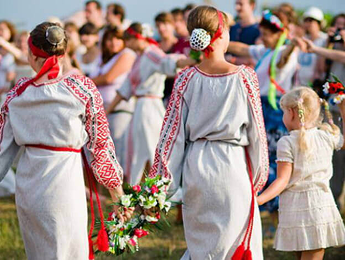
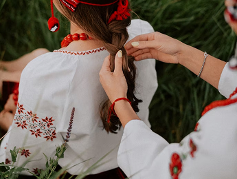
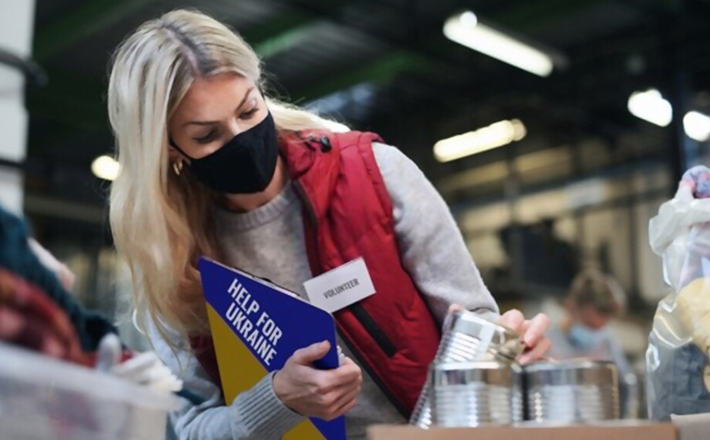

Хто ми та що робимо
Наша мета: сформувати позитивний імідж України як сучасної та привабливої європейської країни.
Наша місія: розвиток української діаспори в Іспанії задля зміцнення міжнародних зв'язків України та Іспанії.
Ольга Дзюбан заснувала Асоціацію «Джерело» у 2012 році задля допомоги українцям.
Українці, які опиняються в Іспанії та хочуть залишитись у цій країні, інтегруватись, мають великі потреби у юридичних консультаціях, психологічній підтримці, спілкуванні, теплій дружній атмосфері. Все це дає землякам «Джерело».
Друга по значенню ціль — показати культуру України, ділитись традиціями, створювати освітні та культурні проєкти, які роблять життя людей насиченим, цікавим та щасливим.
Основними цілями діяльності Асоціації є:
- Розвиток українських освітніх та культурних проєктів
- Організація заходів, спрямованих на обмін та взаємозбагачення українців з представниками інших культур
- Збереження українських культурних традицій
- Соціальна адаптація українців в Іспанії
- Промоція українських виробників та представників креативних індустрій
- Розвиток інституту волонтерства в Каталонії
- Збір гуманітарної допомоги для України та допомога українським біженцям. (з початку війни в Україні робота у цьому напрямку стала інтенсивнішою)


